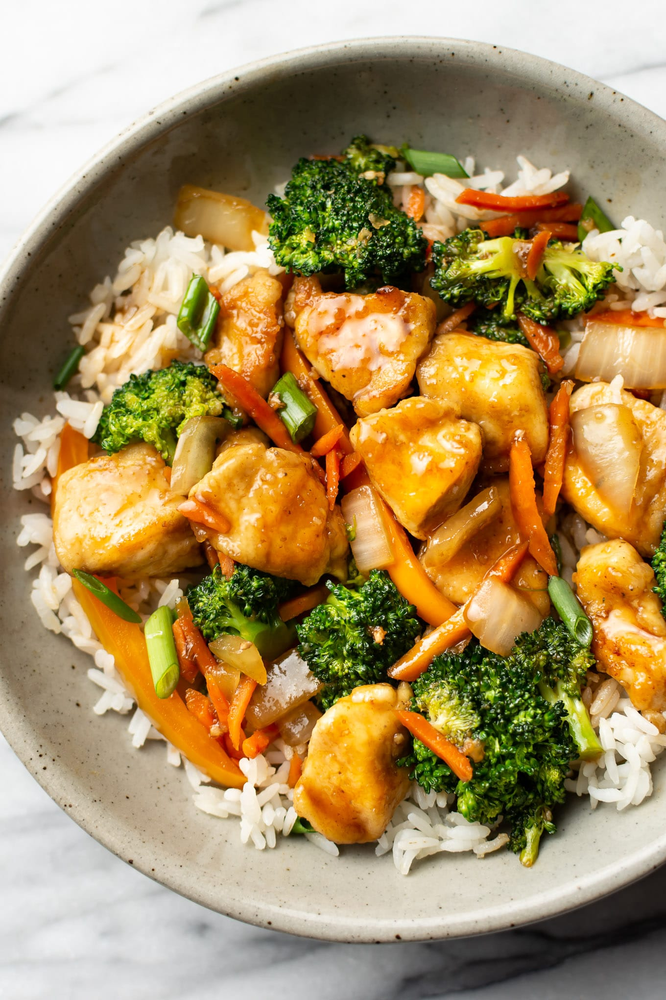

Chicken Stir Fry

Description
This sesame chicken stir-fry is a very tasty, yet wholesome dish.
Sauce Ingredients
- ½ cup low-sodium soy sauce
- ½ medium orange, juiced
- 2 teaspoons sesame oil
- 2 teaspoons stevia powder
- ½ teaspoon garlic powder
- ⅛ teaspoon ground ginger
Sauce Ingredients
- 1 tablespoon vegetable oil
- ½2 (8 ounce) skinless, boneless chicken breasts, cut into bite-sized pieces
- 3 cloves garlic, minced
- 1 cup broccoli florets
- ½ cup canned bamboo shoots, drained
- ½ cup chopped red bell pepper
- ½ cup chopped yellow bell pepper
- ½ cup chopped orange bell pepper
- ½ cup thinly sliced green onion
- 1 tablespoon black sesame seeds
- 1 cup cooked long-grain white rice
- 1 cup cooked wild rice
Steps
- Combine soy sauce, orange juice, sesame oil, stevia powder, garlic powder,
and ginger for teriyaki dressing in a small saucepan. Bring to a boil over
medium-high heat, stirring constantly; continue cooking until the mixture
thickens slightly. Remove and set aside.
- Heat a large skillet over medium-high heat. Add vegetable oil and heat
until shimmering, 1 to 2 minutes. Add chicken and garlic; stir-fry for
2 to 3 minutes. Add broccoli and continue to stir-fry, 4 to 6 minutes.
Add bamboo shoots and bell peppers; cook for an additional 4 to 6
minutes.
- Carefully pour the teriyaki dressing into the skillet (watch for
splattering); cook until chicken is no longer pink in the center and juices
run clear, and the vegetables are tender, about 5 minutes more.
- Remove from heat and stir in green onion and sesame seeds, reserving some
of each for garnish. Serve immediately over cooked white and wild rice with
the reserved green onions and sesame seeds.